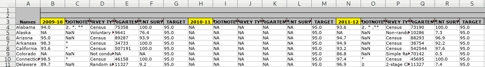

9.2 Vaccinations

This is a real-life example of implied multiples. Implied multiples look like a single table, but many of the headers appear more than once. There is a dominant set of headers that are on the same ‘level’ (e.g. in the same row) as the other headers.
In this case, there is a small multiple for each year of data. The year headers are highlighted in yellow in the screenshot.

Download the file. Original source.
The way to unpivot this is to realise that the year cells represent two different things: the year (obviously) and a statistic (percentage vaccinated). It would have been easier to unpivot if the years had been put into a separate row of headers, so we will pretend that that was in fact the case.
- Filter for the year cells and store in a variable to
enhead()later. behead()everything else as usual, and then overwite the year headers withpercentage_vaccinated.enhead()the year cells.
cells <- xlsx_cells(smungs::vaccinations, "SVV Coverage Trend Data")
years <-
cells %>%
dplyr::filter(row == 3,
col >= 1,
str_detect(character, "20[0-9]{2}-[0-9]{2}")) %>%
select(row, col, year = character)
years## # A tibble: 42 x 3
## row col year
## <int> <int> <chr>
## 1 3 2 2009-10
## 2 3 8 2010-11
## 3 3 14 2011-12
## 4 3 20 2012-13
## 5 3 26 2013-14
## 6 3 32 2014-15
## 7 3 38 2015-16
## 8 3 44 2009-10
## 9 3 50 2010-11
## 10 3 56 2011-12
## # … with 32 more rowscells %>%
select(row, col, data_type, character) %>%
behead("up-left", "series") %>%
behead("up-left", "population") %>%
behead("left", "state") %>%
behead("up", "header") %>%
mutate(header = if_else(str_detect(header, "20[0-9]{2}-[0-9]{2}"),
"percent_vaccinated",
header),
header = str_replace_all(str_to_lower(header), " ", "_")) %>%
enhead(years, "up-left") %>%
select(row, series, population, state, year, header, character) %>%
spatter(header, character) %>%
select(series, population, state, year, percent_vaccinated, percent_surveyed,
everything())## # A tibble: 2,226 x 11
## series population state year percent_vaccina… percent_surveyed row footnotes survey_type
## <chr> <chr> <chr> <chr> <chr> <chr> <int> <chr> <chr>
## 1 Schoo… All kinde… Alab… 2009… 94.0 100.0 4 ≥. *. ** Census
## 2 Schoo… All kinde… Alab… 2010… NA NA 4 NA NA
## 3 Schoo… All kinde… Alab… 2011… 93.6 100.0 4 ≥. * .** Census
## 4 Schoo… All kinde… Alab… 2012… 92.8 100.0 4 ≥. * . ‡… Census
## 5 Schoo… All kinde… Alab… 2013… 92.0 100.0 4 ≥. *. ** Census
## 6 Schoo… All kinde… Alab… 2014… 93.5 100.0 4 ≥. * Census
## 7 Schoo… All kinde… Alab… 2015… 93.1 100.0 4 ≥.* Census
## 8 Schoo… All kinde… Alab… 2009… NReq 100.0 4 *. ** Census
## 9 Schoo… All kinde… Alab… 2010… NA NA 4 NA NA
## 10 Schoo… All kinde… Alab… 2011… NReq 100.0 4 * .** Census
## # … with 2,216 more rows, and 2 more variables: target <chr>,
## # total_kindergarten_population <chr>